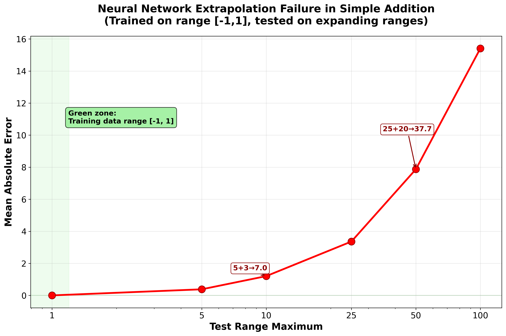
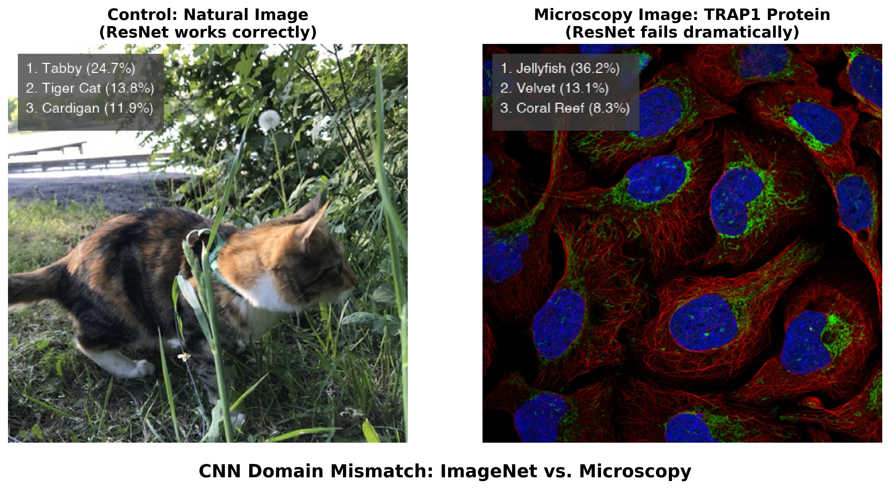
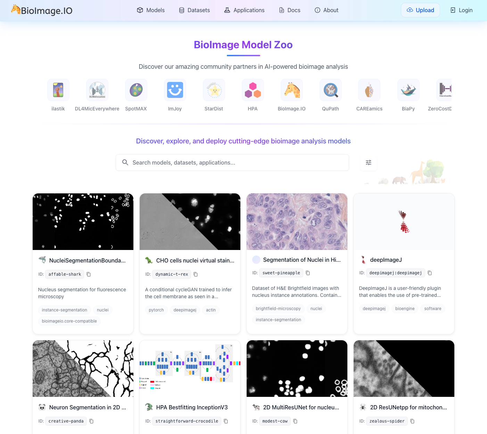
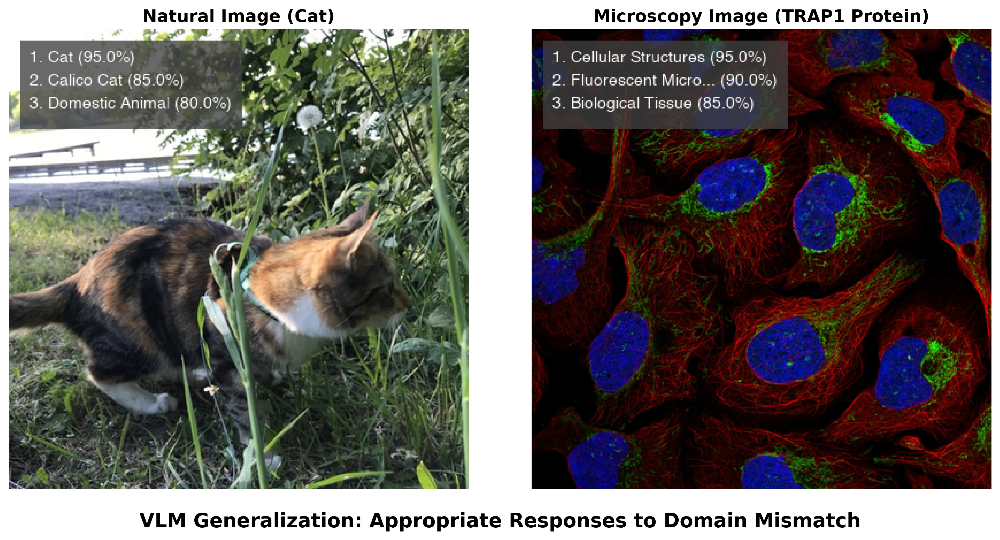
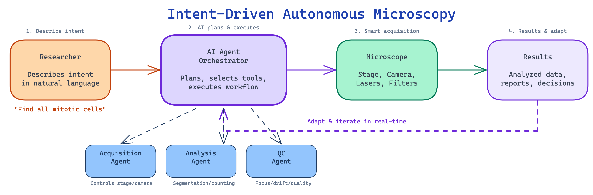

3 Large Language Models and AI Agents
From Deep Learning to Autonomous AI-Powered Bioimage Analysis
Wei Ouyang ![]()
Over the past decade, the way we analyze microscopy data has changed markedly. What began with specialized deep learning models for individual tasks — segmentation, denoising, classification — has evolved into a broader landscape where artificial intelligence (AI) systems can assist with experiment planning, code generation, instrument control, and workflow adaptation. This chapter traces that evolution and equips microscopists with the knowledge to navigate it.
We begin by examining the limitations of traditional deep learning and the rise of foundation models that generalize across imaging modalities. We then introduce large language models and explain how they work at an intuitive level (Section 3.2), before exploring how function calling transformed them from text generators into action-taking agents (Section 3.3). The chapter covers vision-language models for microscopy (Section 3.4) and the growing ecosystem of AI agents that can orchestrate complex workflows, control instruments, and generate software on demand (Section 3.5, Section 3.6). A hands-on practical guide (Section 3.7) provides concrete workflows for getting started, followed by an honest discussion of challenges, implications for the profession, and an outlook on where the field is headed (Section 3.8).
Throughout, we maintain a critical perspective: these tools offer genuine capabilities, but they also hallucinate, carry biases, and cannot replace the domain expertise of trained microscopists. Understanding both the power and the limitations is essential for responsible adoption.
3.1 From Deep Learning to Foundation Models and Generative AI
The application of AI to microscopy has changed rapidly. The modern era began with convolutional neural networks (CNNs), which improved how we process biological images. These supervised models were trained to perform specific tasks: classifying images, segmenting structures, denoising acquisitions, or translating between imaging modalities. Architectures like ResNet (for image classification) and U-Net (for segmentation and image-to-image translation) became foundational not only in bioimaging but across computer vision more broadly (see Chapter 4 for a detailed discussion of these architectures).
3.1.1 The Extrapolation Problem: Why Task-Specific Models Break Down
These early deep learning approaches showed impressive capabilities within their training domains, but they carry a fundamental and often underappreciated limitation: neural networks are sophisticated pattern-matching systems that work reliably only when processing inputs similar to their training data. They are poor at extrapolation. A network trained to segment fluorescent nuclei in one cell line, imaged on one microscope, at one magnification, may fail — sometimes silently — when applied to a different cell type, a different microscope, or even a different staining protocol. This brittleness has been documented systematically: standard neural networks fail at tasks as simple as arithmetic when tested outside their training range1, and the problem compounds for the complex, high-dimensional data typical of microscopy.
To illustrate this, we conducted a simple experiment (see neural_network_extrapolation_failure.py) where we trained a multi-layer perceptron to learn addition using numbers in the range [-1,1]. When tested on progressively larger ranges, the model’s performance degrades severely — with errors increasing by approximately 7,700× from the training range (Figure 3.1).

Figure 3.2 demonstrates the same problem with direct relevance to microscopy. When we apply a standard ResNet50 model trained on ImageNet to a natural photograph, it correctly identifies a cat with reasonable confidence. But when presented with a fluorescence microscopy image showing TRAP1 protein localization in human cells, the same model produces confident yet completely irrelevant predictions — “jellyfish” (36.2%), “sea anemone” (28.1%), “coral reef” (15.7%). The model has never encountered microscopy data, so it maps unfamiliar visual patterns onto the closest categories it knows.

A researcher unfamiliar with the model’s training background might trust these confident predictions, potentially misinterpreting biological data. The 36.2% confidence in “jellyfish” illustrates a general failure mode: neural networks can produce authoritative-sounding but scientifically meaningless outputs when applied outside their intended domain. Stretching these models beyond their training distribution can result in hallucinated objects, irrelevant labels assigned with deceptively high confidence, or artifacts that mislead biological interpretation.
This does not mean that ImageNet-pretrained models are useless for microscopy — in practice, most deep learning approaches in bioimaging start from ImageNet-pretrained weights and then fine-tune on domain-specific data. But even after fine-tuning, the base model retains learned features from its original training. When the model encounters microscopy images with visual patterns that happen to resemble natural objects — jellyfish-like fluorescent textures, coral-like tissue structures — these embedded representations can influence predictions, potentially introducing systematic biases.
3.1.2 The Rise of Generalist and Foundation Models
A major trend in bioimage analysis has been the shift from narrow, task-specific models toward generalist and foundation models that work across diverse imaging conditions without retraining.
Cellpose pioneered this approach for cell segmentation. By training on a diverse dataset spanning fluorescence, brightfield, and even non-microscopy images with similar visual characteristics, Cellpose achieved strong generalization across cell types and imaging modalities that previous models required separate training for. Cellpose 32 further advanced this by introducing one-click image restoration that enables segmentation even of degraded images — noisy, blurry, or undersampled data that would defeat earlier models.
Segment Anything Model (SAM), released by Meta in 2023, advanced the field of promptable segmentation further. Trained on over one billion masks from 11 million images, SAM demonstrated that a single model could segment essentially any object in any image through simple prompts (points, boxes, or text). Despite being trained entirely on natural images, SAM showed unexpected capability on out-of-domain scientific images, sparking a wave of microscopy-specific adaptations:
- micro-SAM3 fine-tuned SAM specifically for light and electron microscopy, extending it to support 3D segmentation and cell tracking. micro-SAM provides interactive segmentation tools through a napari plugin, making foundation model capabilities directly accessible to microscopists.
- CellSAM4 combined SAM with a custom cell detection module (CellFinder) to achieve expert-level segmentation performance across mammalian cells, yeast, and bacteria — all with a single unified model.
- Cellpose-SAM5 adapted SAM’s pretrained transformer backbone to the Cellpose framework, achieving what the authors describe as superhuman generalization for cellular segmentation across diverse imaging conditions.
The key insight is that models trained on vast, diverse datasets can learn transferable visual features that generalize well to microscopy. A model that has processed billions of natural images learns representations of edges, textures, boundaries, and object structure that transfer effectively, even to fluorescent cells it has never encountered. This is the same principle underlying transfer learning, but operating at a much larger scale.
While these generalist models have made deep learning safer and more accessible, they remain largely focused on segmentation — a relatively well-defined computational task. More complex microscopy challenges such as classification across diverse experimental conditions, image restoration, spectral unmixing, or artificial labeling still require task-specific approaches. The gap between what generalist models can do and what microscopy research demands is precisely the space that large language models and AI agents are beginning to fill.
3.1.3 The Complexity Challenge
Microscopy imaging presents complexity well beyond segmentation. Researchers routinely work with diverse labeling schemes, varying numbers of channels, different spatial scales, temporal dimensions, and countless combinations of experimental conditions. These multifaceted combinations make it difficult to build generalist models for broader tasks, and as a result, the vast majority of models remain highly task- and data-specific. This proliferation has driven community efforts such as the BioImage Model Zoo (https://bioimage.io) — a collaborative initiative to facilitate sharing of AI models across input image types and architectures, providing essential infrastructure for the community (Figure 3.3).

Yet the growing ecosystem has also revealed an accessibility paradox. Model developers struggle with diverse training data requirements, validation protocols, and framework compatibility, while the burden of creating user-friendly interfaces often exceeds available time. Users face the opposite problem: an overwhelming array of model choices without clear guidance on which to select, complex software installations, and limited technical expertise to validate whether a model works on their specific data. As highlighted by Ouyang, et al.6, the traditional desktop-centric paradigm — where analysis occurs in isolation on a single workstation — creates barriers to collaboration and reproducibility. While AI capabilities have advanced considerably, the practical barriers to using these tools have in many cases increased, widening the gap between AI potential and real-world adoption in biological research.
Modern microscopy data volumes amplify these challenges further. Terabytes of high-resolution images from time-lapse experiments, multi-channel fluorescence imaging, and high-content screening assays require sophisticated visualization and extensive manual interaction. Many important patterns, subtle phenotypes, or rare events are simply missed due to practical limitations of human-driven exploration.
3.1.4 Summary: The Evolution of AI Models for Microscopy
To orient readers, Table 3.1 summarizes the key model types discussed in this chapter — from traditional convolutional neural networks to modern AI agents — along with their inputs, outputs, and example tools.
| Model Type | Input | Output | Task Type | Example Tools |
|---|---|---|---|---|
| CNNs | Images | Labels | Classification | ResNet |
| U-Net variants | Images | Masks, restored images | Segmentation, restoration | U-Net, Cellpose |
| LLMs | Text | Text, code | Natural language, code generation | ChatGPT, Claude |
| VLMs | Images + Text | Text, annotations | Visual Q&A, classification, description | GPT-4o/5, Gemini, Claude |
| AI Agents | Files + Prompts | Code, results, workflows | Tool orchestration, autonomous analysis | Claude Code, Gemini CLI, Codex, Omega, BioImage.IO Chatbot |
3.1.5 The Path Forward: From Generative AI to AI Agents
Large language models (LLMs) — such as those from OpenAI, Google, and Anthropic — interact through natural language rather than specialized interfaces. They can generate code, provide explanations, and execute actions through conversation, lowering many of the technical barriers that have limited AI adoption in microscopy.
A critical development was the introduction of function calling (also called tool use) — the ability for LLMs to invoke external tools, APIs (application programming interface), and software through structured interfaces rather than generating plain text. First introduced by OpenAI in June 2023, function calling transformed LLMs from text generators into systems that can execute code, query databases, control instruments, and interact with scientific software. Combined with standardized protocols like Anthropic’s Model Context Protocol (MCP, announced November 2024), this created a general-purpose interface layer connecting AI reasoning to existing scientific tools.
With tool-calling capabilities, LLMs can operate as AI agents — systems that plan actions, execute them, observe outcomes, and adapt iteratively. For bioimaging, this means AI agents can help select analysis methods, configure parameters, generate custom code, and troubleshoot failures through natural language interactions. Multimodal language models can also interpret microscopy images directly, combining visual understanding with code generation in a single interface. However, as we discuss throughout this chapter, these capabilities come with important limitations requiring careful human oversight.
The following sections explore each of these developments: how LLMs work (Section 3.2), how function calling enables tool use (Section 3.3), how vision-language models handle microscopy images (Section 3.4), and how AI agents are reshaping experimental workflows (Section 3.5, Section 3.6).
3.2 Foundations of Large Language Models: An Intuitive Primer
At its core, a Large Language Model (LLM) like ChatGPT, Gemini, or Claude is a text prediction engine operating at enormous scale. Its fundamental task is: given a sequence of text, predict the most probable next word. The autocomplete feature on your phone does something similar, but an LLM applies this principle with billions of parameters trained on a substantial fraction of human-written text. By repeatedly predicting the next word, an LLM can generate fluent, coherent paragraphs — and in the process, exhibit capabilities that go well beyond simple text completion, including code generation, logical reasoning, and scientific explanation.
3.2.1 How LLMs Learn: Training on the World’s Text
The “Large” in LLM refers to two aspects: the size of the neural network (with billions of adjustable parameters) and the volume of text it learns from. Training involves feeding the model a massive dataset comprising a significant portion of the public internet, digital books, scientific articles, and code repositories.
The training objective is conceptually straightforward: given a sequence of text, the model learns to predict the next word. For example, given the partial sentence “The scientist placed the sample on the microscope,” the model learns that “stage” is a likely next word. Before training, predictions are essentially random, but through billions of examples, the model gradually learns which words tend to follow which, adjusting its internal connections to improve predictions (see Chapter 4 for more details on the mechanics of training).
To process text, the model first breaks sentences into tokens — chunks that may be whole words or subword pieces. For instance, “microscope” might be a single token, while “fluorescence” might be split into “fluor” + “escence.” Each token is converted into a numerical vector through a process called embedding, creating a mathematical representation that captures meaning and context. These vectors pass through layers of the neural network, where the model learns how words relate to each other. After training on billions of sentences, the model develops a rich statistical map of language — the relationships between words, phrases, and concepts.
3.2.2 The Transformer: A Revolution in Understanding Context
The critical breakthrough enabling modern LLMs is the transformer architecture, introduced by Vaswani et al. in 2017. Before this innovation, language models had very short “memory” and would lose track of context in longer text. The transformer introduced a mechanism called self-attention, which allows the model to weigh the importance of every word in the input simultaneously, regardless of position. When processing the sentence “The cell was stained with DAPI, which binds to DNA in the nucleus,” the attention mechanism enables the model to connect “nucleus” to “cell,” maintaining long-range context and generating coherent, relevant responses.
3.2.3 Fine-Tuning for Domain-Specific Tasks: An ImageJ Macro Example
While the scale of training models like ChatGPT or Claude seems daunting, the underlying principles are accessible. To illustrate how LLMs can be adapted for domain-specific code generation, consider how one might fine-tune a small language model to generate ImageJ macros — simple scripts that automate repetitive tasks in Fiji/ImageJ, one of the most widely used tools in microscopy.
The process begins with data collection: gathering domain-specific examples, such as ImageJ macro files (.ijm) from public GitHub repositories. Even a modest collection — say, 28 macro files totaling about 82,000 characters — provides enough material for a small model to learn the syntax and patterns of ImageJ macro language.
Rather than training from scratch, this approach uses transfer learning: starting with a small, pre-trained model (such as SmolLM27 with 135 million parameters — orders of magnitude smaller than commercial frontier models) and fine-tuning it on microscopy-specific code. During fine-tuning, the model learns to predict the next token in ImageJ macro sequences, absorbing the syntax, common function calls, and typical workflow patterns. On a modern laptop, this process can complete in 10–20 minutes without specialized hardware.
After fine-tuning, such a model can generate plausible ImageJ macro code from natural language prompts. When asked to “Create a macro to threshold an image,” it might produce something like:
setThreshold(50, 255);
run("Convert to Mask");
run("Analyze Particles...", "size=20-Infinity");This small-scale example illustrates the same principle behind commercial LLMs: learn statistical patterns of language from large amounts of text, then specialize through fine-tuning. The difference is one of scale — frontier models train on orders of magnitude more data with vastly larger networks — but the core mechanism is the same.
3.2.4 Code Generation for Microscopy: Capabilities and Limits
For bioimage analysis, LLM code generation is most valuable when it bridges the gap between a researcher who understands what analysis they need and the programming required to implement it. A microscopist who knows they need to measure nuclear fluorescence intensity across treatment conditions can describe this to an LLM and receive a working Python script — without memorizing the syntax for loading TIFF files or calling scikit-image functions. This lowers the barrier to computational analysis, particularly for researchers who understand the biology but lack extensive programming backgrounds.
How well does this actually work? A rigorous benchmark by Haase, et. al.8 evaluated 18 LLMs on 57 bioimage analysis coding tasks with unit tests. The best-performing model (Claude 3.5 Sonnet) achieved a 58% pass rate, followed by GPT-4o at 50%. Notably, some tasks — including deconvolution, surface measurement, and voxel size reading — could not be solved by any model tested. A broader evaluation across 293 biomedical data science tasks found that standalone LLMs achieve under 40% accuracy, but an iterative agent approach — where the system executes code, observes errors, and refines its solution — raised accuracy to 74%9. These benchmark numbers will change as models improve, but they provide a realistic snapshot: AI-generated code is a useful starting point, not a finished product.
AI-assisted code generation has not reached the point where users without any programming understanding can reliably build complex analysis pipelines. Users still need foundational computational thinking — not necessarily memorized syntax, but the ability to decompose problems into discrete steps, recognize when an output looks wrong, and evaluate whether an approach is appropriate for their data. AI-assisted programming lowers the barrier to entry; it does not eliminate the need for scientific judgment about what the code should do.
3.3 From Text Generation to Action: Function Calling and Tool Use
A critical limitation of early LLMs was that they could only produce text. A researcher could ask ChatGPT how to segment nuclei in a DAPI image, and the model would generate a Python script — but the researcher still had to copy that code, set up the right software environment, install dependencies, debug errors, and run it themselves. The model was knowledgeable but unable to act.
Function calling (also known as tool use), first introduced for LLMs by OpenAI in June 2023 and rapidly adopted across the industry, changed this. Instead of merely describing what a user should do, an LLM can now invoke external tools, pass structured parameters, receive results, and reason about what to do next.
3.3.1 How Function Calling Works
In a function-calling workflow, the LLM is provided with a set of tool definitions — structured descriptions of available functions, their parameters, and expected inputs. When a user makes a request, the model reasons about which tools are needed, generates structured calls with correct parameters, receives results, and decides whether to take further action or report findings.
Consider a concrete example. A microscopist asks: “Measure the average fluorescence intensity in the green channel of my image.” Without function calling, the LLM would write a Python script and ask the user to run it. With function calling, the model directly invokes analysis tools in sequence:
{"tool": "load_image", "params": {"path": "experiment_01.tif"}}
{"tool": "extract_channel", "params": {"image": "...", "channel": "green"}}
{"tool": "measure_intensity", "params": {"image": "...", "metric": "mean"}}Each call returns a result that the model inspects before deciding on the next step. If the image fails to load — perhaps the file format is unexpected — the model can read the error, try a different loading function, and continue. This structured, machine-readable interface between AI reasoning and tool execution is fundamentally different from generating a script and hoping the user can run it correctly.
3.3.2 From Fragmented Tools to a Universal Protocol
Function calling became an industry standard quickly — by early 2024, every major LLM provider supported structured tool invocation. Two subsequent developments made it considerably more powerful for scientific applications.
First, multimodal function calling (introduced with GPT-4o in May 2024) allowed a model to examine an image and call analysis tools in a single interaction. A researcher could upload a confocal image and ask “segment the nuclei,” and the model would both interpret the image visually and invoke the appropriate segmentation tool — combining perception with action.
Second, a key practical challenge was fragmentation: every tool provider defined its own interface format, making it difficult to connect a single agent to diverse software. Anthropic’s Model Context Protocol (MCP), announced in November 2024, addressed this by providing an open standard for connecting AI agents to external tools and data sources. MCP gives any AI model a universal way to discover and use any compatible tool — analogous to how USB standardized device connectivity. For microscopy, MCP means that a single agent could potentially access a microscope control system, an image analysis library, a literature database, and a model repository through the same protocol. By late 2025, MCP had been adopted as an industry-wide standard, with donation to the Linux Foundation and support from major AI providers.
Together, these developments transformed function calling from a feature of individual chatbots into the backbone of AI agent systems. Current frontier models combine large context windows with sophisticated tool use, enabling agents to work with entire experimental datasets in a single session. The practical impact for microscopy is explored in Section 3.5.
3.3.3 From Chatbots to Agents: The Trust Escalation
Function calling created a spectrum of increasing autonomy. At one end sits assisted mode, where the AI suggests tool calls but a human approves each one — useful when learning a new workflow or working with unfamiliar data. In the middle is supervised mode, where routine actions (loading an image, running a standard segmentation) execute automatically while consequential ones (deleting data, modifying acquisition settings) require confirmation. At the far end is autonomous mode, where the AI plans and executes multi-step workflows with minimal human intervention, checking in only for high-stakes decisions.
This progression mirrors how we delegate tasks to human colleagues — starting with close supervision and gradually extending trust as competence is demonstrated. In microscopy, the boundaries matter: an AI agent might autonomously run routine segmentation, but it should pause before modifying acquisition parameters on an expensive experiment, before discarding images that might contain rare biological events, or before committing to an irreversible analysis method. Deciding where to draw these boundaries is a design decision that each laboratory must make based on the stakes of the experiment.
When you ask a modern AI agent to “segment the nuclei in my DAPI image and count them,” the agent does not just write a script. It directly calls a segmentation tool (e.g., Cellpose or StarDist10), passes your image, retrieves the segmentation mask, calls a counting function, and returns the result with a visualization. Each step is a structured tool call with typed parameters — not free-form text generation. If any step fails, the agent reads the error and adapts its approach.
3.4 Multi-modal AI: Vision-Language Models for Microscopy
Biological research is inherently multi-modal. A microscopy experiment produces not just images but also metadata about the sample preparation, the imaging conditions, the fluorescent labels used, and the biological question being asked. Traditional image analysis pipelines discard most of this context: a segmentation algorithm processes pixel intensities without knowing what protein is being labeled or what drug treatment was applied. Vision-language models (VLMs) — models that process both images and text within a single architecture — offer a different approach. By accepting natural language alongside visual input, they can incorporate experimental context into their analysis, at least in principle.
As of early 2026, all major LLM providers offer VLM capabilities (OpenAI’s GPT-5 series, Anthropic’s Claude 4.5/4.6, Google’s Gemini 3 Pro, and open-source models such as Meta’s Llama 4). These models accept images as input alongside text prompts and can generate text descriptions, answer questions about visual content, and — when combined with function calling (Section 3.3) — invoke analysis tools based on what they see.
3.4.1 How VLMs Interpret Microscopy Images
The difference between a VLM and a traditional CNN becomes clear when both encounter unfamiliar data. As demonstrated in Section 3.1, a ResNet50 model trained on ImageNet confidently misclassified a fluorescence microscopy image of TRAP1 protein as “jellyfish” — the model had no mechanism to recognize that it was looking at something outside its training categories. Figure 3.4 shows what happens when a VLM encounters the same image. Rather than forcing the image into a predefined label set, the VLM recognized it as fluorescence microscopy and described the cellular structures in biological terms, acknowledging the limits of what it could determine from the image alone.

This difference stems from how the models are built. A CNN trained for classification must assign one of its predefined labels to every input — it has no way to say “I don’t recognize this.” A VLM, by contrast, generates open-ended text responses and can express uncertainty, describe what it observes, and qualify its interpretations. When combined with token-level log-probability outputs (logprobs), VLMs can provide rough indicators of their own confidence — though these reflect the model’s internal state rather than calibrated probabilities, and should not be interpreted as rigorous uncertainty estimates.
VLMs can also perform Visual Question Answering (VQA) on biological images. When asked to analyze the TRAP1 protein image in detail, a modern VLM described the imaging modality, identified the likely fluorescent channels (blue DAPI nuclear staining, red cytoskeletal structures, green organelle labeling), and offered interpretations about intracellular organization. This contextual analysis from a general-purpose model — one not specifically trained on microscopy data — goes beyond what a classifier can provide. However, these interpretations should be treated as informed hypotheses, not established facts: VLMs can produce plausible-sounding but incorrect biological descriptions, particularly for specialized imaging techniques or unusual sample preparations. Early benchmarks suggest competitive performance on some biomedical image classification tasks in zero-shot settings, though results vary considerably across imaging modalities and systematic evaluations on microscopy-specific data remain limited.
3.4.2 Practical Capabilities and Current Limitations
The combination of visual understanding and language generation enables a workflow pattern that was impossible with text-only models: vision-guided programming. A researcher can upload a microscopy image, ask the VLM to suggest an appropriate analysis strategy, have it generate the corresponding code, execute that code, show the VLM the output, and iterate based on visual inspection of the results. This tight feedback loop between seeing and coding is particularly valuable for microscopy, where visual inspection of intermediate results — checking whether a segmentation mask aligns with cell boundaries, whether background subtraction was adequate, whether a threshold captures the structures of interest — is a routine part of quality control.
An important convergence is emerging between VLMs and the foundation models for segmentation discussed in Section 3.1. Models like CellSAM, micro-SAM, and Cellpose-SAM provide validated, high-performance segmentation across diverse imaging modalities. VLMs contribute broad visual understanding and natural language reasoning. When connected through function calling (Section 3.3), these capabilities combine: a researcher describes their goal (“segment all cells and measure their nuclear-to-cytoplasmic ratio”), the VLM interprets the intent, selects and invokes the appropriate segmentation model, and explains the results. The precision comes from the specialized tool; the flexibility comes from the language interface (see also Chapter 8 for guidance on selecting analysis tools, and Chapter 9 for model training approaches).
Despite these capabilities, several practical constraints limit where VLMs are useful today. Processing a single high-resolution microscopy image through a frontier VLM can cost several cents in API fees — acceptable for exploratory analysis of a few images, but prohibitive for high-content screening experiments involving thousands of images. Inference is slow (seconds per image rather than milliseconds), and the computational requirements carry a considerable environmental footprint. Most importantly, the quality of VLM outputs on specialized scientific imagery, while often useful, is inconsistent: a VLM might correctly identify imaging modalities and fluorescent channels in one image, then misinterpret a phase-contrast image as brightfield in the next.
These constraints position VLMs most effectively in human-in-the-loop roles: initial data exploration, annotation quality control, generating training labels for specialized models, and helping researchers develop analysis strategies. In these applications, the cost per image is acceptable, speed is not critical, and expert oversight is already part of the workflow. For production analysis at scale, dedicated pipelines built on specialized models remain the practical choice — but VLMs are increasingly useful for designing those pipelines in the first place.
3.5 AI Agents for Microscopy and Workflow Orchestration
LLMs and VLMs provide powerful individual capabilities — generating text, writing code, interpreting images — but each interaction is essentially one-shot: the user asks, the model responds. AI agents extend these models into systems that can take actions (running code, calling APIs, controlling hardware), observe the results, and adapt their approach iteratively. Where a language model answers a question, an agent works through a problem step by step until it reaches a solution — or recognizes that it cannot.
3.5.1 What Are AI Agents?
At its core, an AI agent is a system built around a language model that operates in a loop: it observes the current state (an image, a dataset, an error message), reasons about what to do next, acts by invoking tools or executing code, and then observes the outcome — repeating until the task is complete. This observe-reason-act cycle, formalized in frameworks like ReAct11, is what distinguishes an agent from a chatbot.
An important question is how agents handle uncertainty — when should they recognize that they cannot answer a query with sufficient confidence? Unlike traditional software that either succeeds or throws an error, language models can produce plausible-sounding but incorrect responses without any internal “failure signal.” Current agents address this through several mechanisms: well-designed system prompts that instruct the model to express uncertainty rather than guess, tool calls that ground responses in verifiable data (e.g., retrieving documentation rather than reciting from memory), and confidence calibration through chain-of-thought reasoning where the model explicitly weighs evidence before responding. In practice, agents are more reliable when they can verify claims through tool use — for instance, running code to check whether a function exists rather than asserting that it does. For microscopy users, this means that agent responses backed by executed code or retrieved documentation are generally more trustworthy than ungrounded assertions about biology or software capabilities. When an agent says “I’m not sure” or asks for clarification, this is often a better outcome than a confident but incorrect answer.
The evolution of agent design reflects a shift in philosophy. Early agents followed agentic workflows — hand-designed sequences of tool calls with human-specified decision points. A developer would define: “first call the segmentation tool, then if the count is above 100 switch to algorithm B.” These workflows were effective but rigid: every decision point had to be anticipated in advance.
Current practice favors general agency: giving agents access to broad capabilities — a terminal, a file system, APIs, analysis libraries — and letting them determine the right sequence of actions for each task. Rather than pre-scripting workflows, the agent receives a goal (“segment and count the nuclei in this dataset”) and works out what tools to use, in what order, handling errors as they arise. This shift from prescriptive scripts to goal-directed problem-solving is the key conceptual development.
Three design principles have proven important for building effective agents, each with direct relevance to microscopy:
Harness engineering refers to the scaffolding that wraps around the language model — the system that manages tool definitions, permissions, error recovery, and the overall agent loop. For microscopy, a well-designed harness determines whether an agent can only call pre-validated segmentation functions (safe but limited) or can install arbitrary packages and run custom code (powerful but requiring oversight). A key lesson from early deployments is that the quality of this scaffolding — how tools are presented, how errors are handled, what safety boundaries are enforced — often matters more than the choice of underlying language model.
Context engineering is the discipline of providing the right information at each step of the agent’s reasoning. An agent with a million-token context window could, in theory, ingest everything, but irrelevant information degrades performance. Effective context engineering involves dynamically loading relevant documentation, previous results, and tool descriptions while filtering out noise. Retrieval Augmented Generation (RAG) is one common approach — injecting relevant external knowledge, such as analysis documentation or published protocols, into the agent’s context at the moment it is needed.
Memory systems allow agents to retain information across sessions. Short-term memory (the conversation context) lets an agent build on previous steps within a session. Long-term memory (persistent storage) enables agents to remember, for instance, which segmentation parameters work well on a particular lab’s imaging setup, or that a user’s file naming convention encodes the treatment condition in the third field.
3.5.2 How Agents Interact with the World
The practical power of an agent depends on what it can access and how. Three complementary approaches have emerged, each with distinct strengths for microscopy.
Structured tool integration through protocols like MCP (Section 3.3) and function calling provides typed, validated interfaces between agents and specific tools. An MCP server for a microscope might expose functions like acquire_image(channel, exposure, z_stack) and move_stage(x, y). Because the agent can only invoke pre-defined operations, this approach is well-suited to instrument control, where safety and predictability are paramount.
Terminal and API access is more powerful and increasingly common. When an agent has access to a command line — as provided by terminal-based coding agents — it can install packages, read documentation, write and execute arbitrary code, and compose workflows by combining tools. This is the approach driving rapid improvements in software engineering benchmarks: the agent works like a developer at a terminal, using whatever tools the task demands rather than being limited to a pre-defined set. For microscopy researchers, this means an agent that can install Cellpose, write a Python analysis script, run it, inspect the output, and iterate — all through natural language conversation.
Graphical interface automation extends agent capabilities to GUI-based software. Computer use capabilities (e.g., Anthropic’s Claude computer use, announced October 2024) allow agents to see a screen, move a cursor, click buttons, and type text — operating software the way a human would. For microscopy, this opens the possibility of controlling proprietary acquisition software or navigating ImageJ/Fiji menus even when no programmatic API is available. Performance on GUI automation benchmarks is improving but remains well below human reliability on complex multi-step tasks.
The trend across all three approaches is toward broader access with safety guardrails. Modern agents operate within permission systems that ask for confirmation before destructive actions, sandbox execution environments to prevent damage to host systems, and provide human-in-the-loop checkpoints for consequential decisions. For microscopy, where instruments are expensive and samples can be irreplaceable, these guardrails are not optional — an agent should never modify acquisition parameters on a running experiment without explicit human authorization.
Several production-grade coding agents are available as of early 2026. Terminal-based agents — Claude Code (Anthropic), Gemini CLI (Google, open-source with generous free tier), and OpenAI Codex (open-source) — run in the developer’s command line. IDE-integrated agents like Cursor and GitHub Copilot (agent mode) embed in code editors. Devin (Cognition Labs) provides fully sandboxed development environments. All support MCP and function calling; the choice often comes down to cost, interface preference, and which model best suits the task. See Section 3.7 for a hands-on tutorial.
3.5.3 Use Cases for Bioimage Analysis
AI agents are well-suited to microscopy because they combine the ability to reason about biological problems with the ability to execute computational solutions. Several patterns of use have emerged:
Conversational image analysis. A researcher describes a multi-step analysis in natural language — “segment the nuclei in this image, measure their areas, and compare the size distributions across treatment conditions” — and the agent breaks this into tool calls, executes them, and presents results with visualizations. The key advantage over a static pipeline is that the researcher can inspect intermediate results and redirect the analysis conversationally: “the segmentation is merging touching nuclei — try a smaller cell diameter.”
Automated workflow construction. Agents can build analysis pipelines dynamically by selecting appropriate tools, configuring parameters, and chaining operations based on image content and user goals — adapting the workflow as intermediate results come in.
On-demand software generation. Agents can create custom scripts, GUIs, and analysis tools tailored to specific experimental needs — a capability transformative enough to warrant its own discussion (see Section 3.6).
Autonomous error handling. When a pipeline step fails, agents can diagnose the problem by analyzing error messages, searching documentation, and implementing fixes without human intervention. For researchers without extensive programming experience, this considerably reduces the barrier to using computational tools.
Intelligent data exploration. For large microscopy datasets — where a researcher might otherwise spend days scrolling through images — an agent can cross-reference experimental metadata, identify relevant subsets, and surface patterns or rare events that would be impractical to find by manual inspection.
3.5.4 Concrete Examples: Omega and the BioImage.IO Chatbot
Two published systems illustrate what AI agents can accomplish in bioimage analysis today, and where the practical limits lie.
Omega, published in 202412, is a napari plugin that enables conversational image analysis. Users describe tasks in natural language — “segment the nuclei” or “create a depth-coded projection of this z-stack” — and Omega generates and executes the corresponding code within the napari viewer. Through its LiteMind library, Omega connects to multiple LLM providers (OpenAI, Anthropic, Google), allowing it to visually interpret the contents of the napari viewer and make context-dependent decisions about analysis approaches. The system can also generate custom widgets on demand — for instance, a slider-based tool for filtering segmented objects by area. Omega demonstrates that conversational agents can meaningfully lower the barrier to interactive image analysis, though the quality of results depends on how precisely the user describes their intent and on the underlying LLM’s ability to generate correct code.
BioImage.IO Chatbot, also published in in 202413, takes a different approach. Built on Retrieval Augmented Generation (RAG), the chatbot draws on a curated knowledge base of community-contributed documentation from tools including ImageJ, deepImageJ, and the bio.tools registry. Rather than generating analysis code from scratch, it retrieves and synthesizes relevant information from existing documentation, helping users navigate the complex landscape of bioimage analysis tools. The chatbot can also execute Python code in the browser, run models from the BioImage Model Zoo (such as Cellpose), and generate statistical reports. Its extension mechanism, built on the Hypha distributed computing framework, allows developers to serve additional capabilities — including hardware control and GPU-accelerated computation — making it a platform for community-driven agent development rather than a standalone tool.
Both systems are early examples of a paradigm that is evolving rapidly. Neither replaces the need for domain expertise: the researcher must still judge whether a segmentation result makes biological sense, whether the analysis approach is appropriate, and whether the conclusions are supported.
An agent may produce code that runs without errors but implements an inappropriate analysis method or makes incorrect biological assumptions. Segmentation that looks reasonable at first glance may systematically miss a subpopulation of cells. Always inspect intermediate results visually, test on known data when possible, and verify that the analysis logic matches your scientific intent. See Section 3.8 for a full discussion.
3.5.5 The Vision: Intent-Driven Autonomous Microscopy
The trajectory of these developments points toward what we call intent-driven microscopy: the researcher describes what they want to discover, and the AI system determines how to achieve it — planning the experiment, controlling the instrument, acquiring images, analyzing results, and adapting in real-time (Figure 3.5).

Consider a concrete scenario: a researcher tells the system “Find all cells undergoing mitosis in my sample and capture high-resolution z-stacks of each.” An intent-driven system would plan a scanning strategy (low-magnification overview followed by targeted imaging), acquire overview images, run real-time cell classification to identify mitotic cells, switch to high magnification for targeted z-stack acquisition, and deliver the dataset with metadata and quality metrics. Several of these building blocks exist today in isolation — the scientific and engineering challenge lies in integrating them into systems that are reliable, general-purpose, and safe enough for routine use.
3.5.6 Autonomous Microscopy: AI-Controlled Instruments
The most ambitious application of AI agents in microscopy is direct instrument control — systems that not only analyze images but plan and execute acquisition protocols (see also Chapter 7). Several recent systems illustrate different points on the spectrum from AI-assisted to AI-driven microscopy.
EIMS (Embodied Intelligence Microscope System), described in a 2025 preprint14, reconceptualizes the microscope as an autonomous agent. A high-level LLM acts as a deliberative planner, interpreting experimental intent (e.g., “capture mitotic events in this sample”) and decomposing it into subgoals executed by specialized control modules. The system reportedly achieves generalization on multi-step protocols without task-specific training, including automated capture of rare spatiotemporal events such as cell division. As a preprint, these results await peer review and independent validation.
AILA (Artificially Intelligent Lab Assistant), published in 202515, applies LLM-based agents to atomic force microscopy. Using specialized agents coordinated by a central planner, AILA was benchmarked on 100 real laboratory tasks (AFMBench). A central finding was sobering: even frontier LLMs struggle with basic experimental tasks, and general language fluency does not translate into experimental competence. Multi-agent architectures significantly outperformed single-agent designs, and the authors raised important safety concerns about autonomous instrument operation — what they termed “sleepwalking,” where an agent takes confident but incorrect actions on expensive equipment.
Two further systems illustrate the broader trend toward AI-controlled microscopy, though they use specialized machine learning rather than LLM-based agents. SmartEM, published in 202616, integrates machine learning directly into the electron microscope acquisition loop, implementing a “foveated” strategy: a quick low-resolution survey pass identifies regions of interest, followed by high-resolution rescanning of only those regions, achieving up to 7-fold acceleration of connectomic brain imaging. pySTED, published in 202417, demonstrates that reinforcement learning agents trained in realistic simulation can transfer successfully to real STED super-resolution microscopes without additional fine-tuning, bridging the simulation-to-reality gap for microscopy control.
These examples span a spectrum from LLM-based planning (EIMS, AILA) to specialized ML-driven acquisition (SmartEM, pySTED). Collectively, they suggest that AI-controlled microscopy is moving from proof-of-concept toward practical deployment — though most systems remain validated only in narrow domains, and the gap between demonstrating a capability in one laboratory and deploying it reliably across diverse instruments is considerable.
3.5.7 Coding Agents: AI with Terminal Access
A particularly consequential development has been the emergence of coding agents — AI systems that operate directly in development environments with access to terminals, file systems, and web browsers. These agents go well beyond earlier LLM assistants that could only suggest code snippets.
Claude Code (Anthropic) is a CLI-based agent that can read and edit files across entire codebases, run shell commands, execute tests, interact with version control, and orchestrate complex multi-step tasks — all while maintaining context across long sessions with million-token context windows. Devin (Cognition Labs) operates in a sandboxed development environment with its own code editor, terminal, and web browser. GitHub Copilot has evolved from inline code suggestions to agent mode, where it can plan changes across repositories, edit multiple files, and iterate on feedback. Cursor and Windsurf represent a new category of AI-native code editors with deeply integrated agent capabilities.
The pace of improvement has been notable. On the SWE-bench Verified benchmark18 — which tests agents on real-world GitHub issues requiring understanding codebases, diagnosing bugs, and implementing fixes — success rates rose from under 5% in early 2024 to over 70% by late 2025. These benchmarks measure general software engineering, not scientific applications specifically, but the underlying capabilities — reading code, debugging errors, composing multi-step solutions — are directly relevant to microscopy analysis pipelines.
For microscopy researchers, the practical significance is that these agents can install analysis packages, write and debug Python scripts for napari or ImageJ, run analysis pipelines, and iterate on results — all through natural language conversation in a terminal. The walkthrough in Section 3.7 demonstrates this workflow concretely.
3.6 On-Demand Software and the Changing Nature of Microscopy Tools
For decades, microscopy analysis has depended on durable software products — applications like CellProfiler, ImageJ/Fiji, and napari that represent years of development effort, extensive documentation, and sustained community maintenance. These tools are general-purpose by design: they must serve a broad range of users and experimental scenarios to justify the investment required to build and maintain them. The trade-off is that researchers must learn to navigate complex interfaces, adapt their thinking to the software’s workflow logic, and work within design decisions made for a broad user base rather than their specific experiment.
AI agents are beginning to change this equation. Instead of learning to operate a general-purpose application, a researcher describes what they need — “create a tool that lets me draw regions on my confocal image, measure mean fluorescence intensity in each region across all channels, and export the results as a CSV” — and the agent generates a purpose-built script or application, typically within minutes for straightforward tasks. The result does exactly what was requested and requires no training to use. If the requirements change, the agent generates a new version rather than patching the old one.
3.6.1 When On-Demand Software Makes Sense
Consider a concrete example. A researcher performing calcium imaging needs to load .nd2 files from a specific acquisition system, extract time-series fluorescence traces from user-drawn regions of interest, apply baseline correction using the F0 method appropriate for their calcium indicator, detect peaks above a threshold, and export both the individual traces and summary statistics. No single existing tool performs exactly this combination of steps in the way the experiment requires. Traditionally, the researcher would either write a custom script (requiring programming expertise), adapt a general-purpose tool (requiring time to learn the interface and work around its assumptions), or ask a bioimage analyst to build something bespoke (requiring their availability and understanding of the experiment).
With a coding agent, the researcher describes these requirements conversationally and receives a working Python script — built on established libraries like scikit-image and matplotlib — that they can run immediately. If the following week’s experiment uses a different calcium indicator requiring different baseline correction, the researcher generates a new script rather than modifying the old one. The entire interaction, for a task of this complexity, might take fifteen to thirty minutes, including testing and refinement.
This approach is most valuable for tasks that are too specific for general-purpose tools but too routine to justify dedicated software development: custom visualization dashboards for a particular multi-dimensional dataset, batch-processing scripts tailored to a lab’s file naming conventions, or quick analysis prototypes for exploring whether an approach is worth pursuing. For complex analysis pipelines involving multiple interdependent steps, novel algorithms, or large-scale processing, the generation process is neither instantaneous nor guaranteed to work on the first attempt — the researcher must understand the analysis well enough to evaluate whether the generated code is correct.
3.6.2 The Reproducibility Question
On-demand software raises a legitimate concern for scientific practice: if an analysis tool is generated and then discarded, how does another laboratory reproduce the analysis?
The concern is real but addressable with existing practices. The generated code is ordinary Python, R, or ImageJ macro — it can be inspected, version-controlled, and shared like any other analysis script. Researchers using this approach should save the generated code alongside their data, record the prompt and model used to produce it, and include the script in their supplementary materials. Importantly, on-demand tools typically compose and configure established, validated libraries — scikit-image, Cellpose, napari — rather than implementing algorithms from scratch. The generated code calls the same functions that a human programmer would use; the agent handles the boilerplate of loading files, configuring parameters, and creating visualizations.
A subtler concern is long-term reproducibility. If a finding is questioned years later, the analysis must still be runnable. Version-pinning dependencies (recording the exact library versions used), including the generated code in a repository, and documenting any manual steps taken during the analysis all help — the same practices that good computational science has always required, but that are easily neglected when the code feels disposable.
There is also a risk of lost institutional knowledge. When a lab builds durable software, the development process creates shared understanding of the analysis logic — what assumptions were made, what edge cases were handled, why certain parameters were chosen. When software is generated on demand and used once, this knowledge may not accumulate. Laboratories adopting this approach should consider maintaining a shared repository of validated analysis scripts, annotated with the experimental context in which they were used.
When using AI-generated code or analysis in your research, document the following for reproducibility:
- Model identity: the specific model name and version (e.g., “Claude Sonnet 4.5, accessed 2026-03-15”)
- Prompts: the exact prompts or conversation used to generate the code — save the full session log if possible
- Generated code: the complete script as produced, before any manual edits, stored alongside the final version
- Dependencies: all library versions used (
pip freezeorconda list), ideally captured in arequirements.txtorenvironment.yml - Manual modifications: any changes you made to the AI-generated output, and why
- Validation steps: how you verified the output — test datasets used, visual inspections performed, comparisons with known results
3.6.3 A Shift in Researcher–Software Interaction
The broader implication is a change in the relationship between microscopists and their computational tools. Traditional software requires the researcher to learn the tool’s interface and adapt their workflow to its logic. On-demand software generation inverts this: the researcher describes the goal, and the software adapts to the researcher. This means that researchers who understand their biology deeply but lack extensive programming training can access computational analysis that was previously gated by programming skill — a meaningful expansion of who can do quantitative microscopy.
At the same time, this approach sits on top of the established software ecosystem, not in place of it. When an agent generates a segmentation script, it calls Cellpose or StarDist underneath. When it builds a visualization, it uses matplotlib or napari. The durable, community-maintained tools become the validated building blocks that agents compose; they become more valuable in an agent-driven world, not less. Software that exposes programmable APIs and command-line interfaces will thrive because agents can call it. Closed, GUI-only tools that cannot be invoked programmatically face a harder path — not because they are technically inferior, but because agents cannot use what they cannot call.
A useful analogy: autofocus did not eliminate the need to understand optics — it freed microscopists to focus on experimental design rather than manual focusing. Similarly, AI agents will not eliminate ImageJ, but they will reduce the need to memorize its menu hierarchy or hand-write batch-processing macros.
How far this shift will go — and where the limits of AI-generated software lie in terms of reliability, complexity, and scientific rigor — remains to be determined through practical experience.
3.7 Practical Guide: Getting Started with AI Agents for Microscopy
Most microscopists encounter AI agents for the first time through web-based chatbots — typing a question and reading a response. That interaction model is useful for learning concepts or troubleshooting errors, but it cannot access your files, run code on your data, or iterate on results. This section walks through a more powerful approach: using a terminal-based coding agent that operates directly in your data directory, writes and executes analysis scripts, installs packages as needed, and refines its work based on your feedback.
3.7.1 Choosing and Installing a Coding Agent
Several terminal-based coding agents are available as of early 2026. The choice between them depends mainly on cost tolerance, institutional preferences, and which model you find most effective for your tasks — the workflow pattern is the same across all of them.
| Agent | Provider | Install command | Free tier | Context window |
|---|---|---|---|---|
| Gemini CLI | npm install -g @google/gemini-cli |
Generous (1,000 req/day, as of early 2026) | 1M tokens | |
| Claude Code | Anthropic | npm install -g @anthropic-ai/claude-code |
Limited | 1M tokens |
| OpenAI Codex | OpenAI | npm install -g @openai/codex |
Limited | Varies |
For this walkthrough, any of these agents will work. To install and start Gemini CLI as an example (it offers a generous free tier at the time of writing):
npm install -g @google/gemini-cli
cd /path/to/your/microscopy-data
geminiOn first run, the agent will prompt you to authenticate. Once set up, it reads the files in your working directory and responds to natural language requests — writing Python scripts, executing shell commands, installing packages, and iterating on results.
When you use a cloud-based AI agent, your prompts and — in some cases — your files are sent to external servers. Before uploading unpublished data, patient-derived images, or proprietary experimental details, check your institution’s data governance policies and the provider’s data retention terms. See Section 3.8 for a fuller discussion.
Never run AI-generated analysis on important data without understanding what the code does. Read through generated scripts before execution, test on a small data subset first, inspect intermediate results visually, and compare with known ground truth when available. AI agents can call non-existent functions, use incorrect parameters, or implement inappropriate methods — and these errors may not produce obvious failures.
3.7.2 Writing Effective Prompts
The quality of an agent’s output depends heavily on how clearly you describe your goal. A few principles help:
- Be specific about your data. Rather than “analyze my images,” say “I have 16-bit TIFF files with three channels: DAPI (blue), phalloidin-488 (green), and MitoTracker Red.”
- State your biological question. “I want to measure whether mitochondrial fragmentation increases after drug treatment” gives the agent far more context than “process these images.”
- Name the tools you prefer. If you want Cellpose rather than a threshold-based approach, say so. The agent will default to whatever it deems easiest, which may not be the most appropriate method.
- Ask to see intermediate results. “Show me the segmentation overlay before proceeding” catches errors early.
- Describe failures concretely. “The segmentation is merging touching cells — can you try the Cellpose ‘cyto3’ model with a smaller diameter?” is more useful than “it didn’t work.”
3.7.3 Walkthrough: Cell Cycle Classification with an AI Agent
This walkthrough demonstrates a realistic, multi-step analysis. The scenario: you have multi-channel fluorescence images of FUCCI-labeled U2OS cells and want to classify cell cycle phases. FUCCI (Fluorescent Ubiquitination-based Cell Cycle Indicator19) uses two fluorescent reporters whose expression is regulated by the cell cycle: mKO2-hCdt1 (red) accumulates during G1 phase, while mAG-hGeminin (green) accumulates during S/G2/M. Cells transitioning through early S-phase co-express both reporters, appearing yellow. U2OS is a human osteosarcoma cell line commonly used in cell cycle studies.
Step 1: Orient the agent. Start the agent in your data directory and describe what you have:
> I have fluorescence images of FUCCI-labeled U2OS cells with three
channels saved as separate .bmp files: brightfield, 488nm (green,
mAG-hGeminin), and 561nm (red, mKO2-hCdt1). I want to segment
individual cells, measure per-cell fluorescence in both channels,
and classify cell cycle phase. Can you examine the files here and
outline an analysis plan?The agent will list your files, check image dimensions and bit depth, and propose a step-by-step plan — explaining the biology and the computational steps needed. This is the key advantage over a web chatbot: the agent works with your actual data, not a hypothetical example.
Step 2: Visualize the data. Before any analysis, inspect what you are working with:
> Load the brightfield, green, and red channel images for one field
of view. Display them side by side with appropriate contrast.
Save the figure as overview.png.The agent writes a script, runs it, and produces the figure. If the contrast is wrong — “the green channel looks saturated” — describe the problem and the agent will adjust.
Step 3: Segment cells. Ask the agent to identify individual cells:
> Use Cellpose to segment cells from the brightfield image. Install
cellpose if needed. Show me the segmentation outlines overlaid on
the brightfield image so I can check the quality.Inspect the overlay carefully. Are touching cells correctly separated? Are small debris objects being counted as cells? If not, describe the problem: “Cells near the image border are being cut off — can you exclude objects touching the edge?” The agent modifies the code and re-runs.
Step 4: Measure and classify. With validated segmentation masks, quantify fluorescence:
> For each segmented cell, measure mean intensity in the green and
red channels. Classify cells as: G1 (high red, low green),
S-phase (co-expressing both — yellow), or G2/M (high green, low
red). Create a red-vs-green scatter plot colored by phase, and
export the per-cell data as a CSV.If the classification boundaries do not match your data — perhaps because your FUCCI reporter expression levels differ from typical values — ask the agent to adapt: “The fixed thresholds are misclassifying transitional cells. Can you try k-means clustering with three clusters on the log-transformed red/green ratio instead?” The agent revises its approach based on your biological knowledge.
Step 5: Validate visually. The final and most important step:
> Overlay each cell's classification (red=G1, yellow=S, green=G2/M)
on the brightfield image. Save as validation_overlay.png.Compare the overlay against what you see in the fluorescence channels. Do the red-labeled cells correspond to visibly red cells in the mKO2 channel? Are the yellow (S-phase) cells genuinely co-expressing both reporters? This visual validation is the human expert’s irreplaceable contribution. No amount of computational sophistication substitutes for a biologist confirming that the output makes biological sense.
The same workflow pattern — orient, visualize, analyze, validate — applies to any microscopy analysis task. Researchers have used coding agents to batch-process time-lapse data, build custom measurement pipelines, generate publication-quality figures, and automate file format conversions. The BioImage.IO Chatbot and Omega for napari, discussed in Section 3.5, offer complementary approaches: web-based guidance and in-viewer analysis, respectively.
3.8 Challenges, Implications, and the Road Ahead
The capabilities described in this chapter are real, but they carry limitations that researchers must understand before incorporating AI agents into their work. Scientific research demands accuracy, reproducibility, and transparency — standards that current AI systems cannot independently meet. The broader ecosystem of AI tools also introduces practical fragility: scripts break when dependencies update, hosted APIs change without notice, and plugins go unmaintained. This section examines these challenges and considers what they mean for microscopy practice, the bioimage analysis profession, and the scientific enterprise.
3.8.1 The Hallucination Problem
The most consequential limitation of current AI systems is their tendency to hallucinate — to generate confident, fluent, and entirely fabricated information. Unlike a human colleague who typically hedges when uncertain, language models produce invented content with the same surface characteristics as verified facts, making the two difficult to distinguish without independent checking.
Hallucination rates vary by task and model. A study evaluating LLMs on systematic review tasks found that a large fraction of AI-generated scientific references were fabricated — ranging from roughly 30% for the strongest models to over 90% for weaker ones20. These figures apply specifically to reference generation, a task where models are particularly prone to invention; hallucination rates for other tasks differ and are less systematically characterized.
In microscopy, hallucinations take several forms that deserve specific attention. Models routinely produce realistic-looking but entirely fictional scientific citations — complete with plausible author names, journal titles, and page numbers for papers that do not exist. When asked for experimental protocols, models can produce detailed, professional-sounding procedures that are scientifically wrong — suggesting fluorophore pairs whose excitation/emission spectra overlap completely, or recommending laser powers that would damage living samples within seconds. They may assert with confidence that specific proteins localize to particular compartments, or that certain treatments produce established phenotypes, without basis in the literature. And they frequently describe software features, function parameters, or capabilities that do not exist in the actual tools — an agent might generate code calling a Cellpose function with a parameter that was never implemented, producing a runtime error or worse, silently defaulting to unexpected behavior.
The root cause is architectural: language models generate text by predicting statistically likely continuations, not by retrieving verified facts. A plausible-sounding citation is, from the model’s perspective, simply a likely sequence of tokens. Retrieval-augmented generation (RAG) partially mitigates this by grounding model outputs in retrieved documents, but does not eliminate hallucination — models can still misinterpret, selectively quote, or confabulate beyond what retrieved sources support.
3.8.2 Reproducibility and Non-Determinism
AI-generated analysis introduces reproducibility challenges distinct from those in traditional computational work. The same natural language prompt given to the same model at different times can produce different analysis scripts — using different libraries, different algorithmic approaches, or different parameter values. Even when both scripts are correct, the results may differ in ways that are difficult to trace.
This non-determinism is not a bug — it is built into how LLMs work. Rather than computing a single deterministic answer, the model produces a ranked list of candidate next words and then samples from that list. A setting called temperature controls how much randomness is involved: low temperature makes the model stick closely to its top predictions, while higher values allow more variety. Additional settings like top-k and top-p sampling further control which candidates are considered. Because of this sampling process, the same prompt can produce different outputs on every run — much like rolling weighted dice. Even when randomness is turned down to its minimum and a fixed random seed is set, exact reproducibility is not guaranteed: the underlying math involves floating-point operations on GPUs that can produce slightly different results depending on the hardware, parallelization, and even system load. Finally, commercial API providers routinely update models behind the same name — “GPT-4o” in January may behave differently from “GPT-4o” in June — adding another layer of variability invisible to the user.
These sources of non-determinism can be partially controlled but not eliminated. Most API providers offer temperature and seed parameters that reduce output variability. Researchers who need reproducibility should save the exact generated code (not just the prompt), pin library versions, and record the model name, version, and parameters used — treating the AI interaction as they would any other step in their methods. Where possible, using specific model version identifiers (e.g., gpt-4o-2024-08-06 rather than gpt-4o) provides a more stable target, though even versioned endpoints may eventually be deprecated.
A subtler issue is false precision. AI-generated code may report cellular measurements to many decimal places — six-digit fluorescence intensities, sub-pixel centroid coordinates — creating an impression of precision that the underlying measurement does not support. Experienced analysts routinely round to appropriate significant figures and propagate uncertainty estimates; AI-generated pipelines rarely do so unless explicitly instructed.
3.8.3 Bias and Data Governance
The training data underlying language models carries systematic biases that affect their recommendations for microscopy. Published scientific literature skews toward positive results, well-funded institutions, and commercially dominant platforms. Documentation for expensive commercial microscopy systems is more extensively represented online than information about open-source or custom-built equipment, which can bias AI suggestions toward costly solutions — a concern for laboratories in resource-limited settings.
Privacy and data governance present practical challenges for any laboratory working with sensitive material. When using cloud-based AI agents, prompts and uploaded files are transmitted to external servers. Laboratories working with patient-derived samples, clinical trial data, or proprietary imaging techniques must consider whether sending this data to third-party services complies with institutional review board approvals, HIPAA, GDPR, or other applicable regulations. Local model deployments address these concerns but require institutional infrastructure that may not be available everywhere.
The economic costs of cloud-based AI processing also merit attention. API charges for processing a single high-resolution image through a frontier VLM are modest (a few cents), but high-content screening experiments involving tens of thousands of images can accumulate considerable costs. The energy consumption of large-scale AI inference also raises environmental questions that the scientific community is beginning to address.
Every AI-generated protocol, analysis pipeline, and factual claim must be independently verified before use in research. AI tools augment human expertise; they do not replace it. When AI is used in a study, document the specific models, prompts, and validation steps in your methods section.
3.8.4 The Evolving Role of Bioimage Analysts
If AI agents can generate analysis pipelines, write code, and operate microscopes, what becomes of the bioimage analyst?
The role remains essential — but it is evolving. As AI makes advanced analysis accessible to more researchers, the demand for expert guidance on validation, interpretation, and experimental design is likely to increase rather than decrease. The job description is shifting: less “the person who runs CellProfiler” and more “the person who evaluates whether an AI-generated pipeline produces biologically meaningful results, recognizes when a segmentation has failed in subtle ways, and designs experiments amenable to rigorous quantitative analysis.”
Microscopists bring domain knowledge that current AI systems lack entirely. They recognize sample preparation artifacts, notice when photobleaching is compromising a time-lapse, understand that a bright ring around a nucleus is an optical aberration rather than a biological structure, and judge whether a segmentation result is consistent with known cell morphology. The AILA benchmarking study15 made this point explicitly: even frontier LLMs “struggle with basic experimental tasks.” Fluent language generation does not confer experimental competence.
The real risk is not job displacement but skills atrophy — a gradual erosion of the community’s ability to evaluate AI outputs. Consider a graduate student who uses an AI agent to build every analysis pipeline during their PhD, never learning how watershed segmentation works or why intensity thresholds behave differently on 8-bit versus 16-bit images. Five years later, as a postdoc, that researcher reviews a paper where the AI-generated segmentation has subtly failed — merging adjacent G1 and S-phase nuclei in a FUCCI experiment because the model was trained on well-separated cells. Without foundational understanding of how segmentation algorithms handle touching objects, this error is invisible. The researcher approves the analysis, and the flawed quantification enters the published literature.
Every field that has adopted automation faces this question. Aviation provides a well-studied parallel: as cockpit automation advanced, training programs had to be redesigned to ensure pilots could recognize and respond to automation failures — precisely because those failures became rarer and harder to detect when they did occur.
- Teach AI literacy alongside microscopy fundamentals — understanding what an algorithm does is as important as knowing how to invoke it
- Develop community validation standards for AI-generated analyses, building on efforts like the BioImage Model Zoo’s metadata requirements
- Maintain human-in-the-loop checkpoints for experimental decisions with irreversible consequences
- Preserve hands-on training — a researcher who has never manually drawn a segmentation boundary cannot evaluate whether an automated one is correct
3.8.5 Taking Stock: What Works, What Is Emerging, What Remains Aspirational
The pace of development has been rapid, and it is worth distinguishing what the field can do today from where enthusiasm or marketing might place it.
Capabilities that are validated and in routine use. LLM-assisted code generation for analysis scripts works reliably when paired with human validation — agents produce functional Python pipelines, ImageJ macros, and napari scripts that accelerate development. Conversational AI assistants are effective for learning concepts, troubleshooting errors, navigating documentation, and drafting protocols (with verification). VLM-based image interpretation provides useful starting points for biological analysis. AI-assisted literature search is already part of many researchers’ daily workflows.
Capabilities demonstrated in research but not yet routine. Autonomous microscope control has been demonstrated by EIMS14 and SmartEM16, showing that AI can plan and execute imaging protocols — though these systems have been validated only in narrow settings. AI agents that orchestrate multi-tool analysis pipelines function in frameworks like Omega and the BioImage.IO Chatbot but lack systematic benchmarking across diverse tasks. On-demand software generation Section 3.6 shows promise for changing how researchers interact with analysis tools. Multi-agent coordination of biomedical research workflows is being explored21, and LLM-driven automation of complex experimental protocols has been demonstrated for specific applications such as CRISPR gene editing22. Closed-loop adaptive imaging experiments are feasible in specialized domains.
Capabilities that remain aspirational. Fully autonomous discovery — where AI formulates hypotheses, designs experiments, collects data, and iterates toward insight without human intervention — has been attempted in narrow settings but remains far from routine in biology. Systems that genuinely replace domain expertise in experimental judgment, perform causal reasoning from image data alone, or continuously learn and improve during deployment are active research topics, not available tools.
The trajectory of improvement has been faster than most observers expected, and capabilities are migrating between tiers at an accelerating rate. But honest assessment requires acknowledging what remains genuinely hard. Causal reasoning, scientific creativity, and the judgment that experienced researchers exercise intuitively — sensing that a result is “too clean,” recognizing that an artifact resembles a biological signal — are not capabilities that current AI systems possess. These tools excel at pattern recognition and workflow orchestration. They do not perform the lateral thinking that drives scientific discovery.
3.8.6 Preparing for an AI-Enabled Future
As these capabilities mature, the microscopy community faces practical decisions that will shape whether AI tools are adopted responsibly and equitably.
Training programs must evolve. AI literacy — understanding what these tools can and cannot do, how to evaluate their outputs, and when human judgment must override — belongs alongside optical physics, sample preparation, and experimental design in microscopy curricula. At the same time, foundational training must not be displaced: the ability to understand why a segmentation algorithm works, not merely how to invoke it through an agent, remains essential for catching errors.
Infrastructure investments matter. Open-source tools, open protocols like MCP, and community-driven resources like the BioImage Model Zoo and AI4Life ensure that AI capabilities remain accessible across institutions with different levels of funding — preventing a widening gap between well-resourced and under-resourced laboratories.
Publication and funding policies need updating. Journals and funding agencies should establish clear expectations for documenting AI tool usage in methods sections: which models were used, what prompts were given, how outputs were validated. These standards should emerge through community consultation, recognizing that both the technology and best practices are evolving rapidly.
3.9 Conclusion
This chapter has traced a shift in what AI can do for microscopists — from task-specific deep learning models that segment cells or denoise images within narrow training distributions, through foundation models that generalize across imaging modalities, to large language models and AI agents that change the nature of the interaction itself. Where earlier tools required researchers to learn specialized software interfaces and write analysis code, LLMs and agents allow them to describe their intent in natural language and have the system handle tool selection, code generation, execution, and iteration.
This is a genuine change in how microscopy analysis can be conducted, but it is not the change that breathless commentary sometimes suggests. AI agents do not understand biology. They do not design experiments. They cannot judge whether a segmentation result makes sense given what is known about the sample. The AILA benchmarking study15 found that even frontier LLMs “struggle with basic experimental tasks” — a finding that should temper expectations about autonomous AI-driven research. What these tools do well is orchestrate existing computational resources, lower barriers to accessing validated analysis methods, and accelerate the cycle of writing code, testing it, and refining it. They are powerful amplifiers of human expertise, not replacements for it.
The practical value depends on how these tools are used. A researcher who treats AI-generated output as a draft to be evaluated — inspecting segmentation overlays, verifying citations, questioning parameter choices — gains a capable assistant. A researcher who accepts outputs uncritically risks introducing systematic errors that are harder to detect precisely because they are embedded in professional-looking code and fluent prose. The validation practices discussed throughout this chapter are not optional safeguards; they are integral to responsible use.
Several open questions will shape how this field develops. Can the community establish validation standards for AI-generated analyses that are practical enough to be widely adopted? Will training programs evolve to teach AI literacy alongside microscopy fundamentals, or will foundational skills erode as automation makes them seem unnecessary? Will open protocols and community infrastructure keep these capabilities accessible to laboratories worldwide, or will they concentrate in well-funded institutions? These are not technical questions — they are choices the community is making now through its investments, curricula, and publication standards.
For readers looking to go deeper: Chapter 4 introduces the neural network architectures underlying the models discussed here, Chapter 9 provides guidance on training and fine-tuning models for specific tasks, and Chapter 10 offers frameworks for evaluating whether AI-generated analysis outputs meet the quality standards that scientific research demands.
AI Disclosure
AI language models (Anthropic’s Claude, specifically Claude Opus 4.6 and Claude Sonnet 4.5) were used during the preparation of this chapter. Their roles included literature search, drafting and revising prose, generating code examples, and producing demonstration figures. All content was reviewed, revised, and verified by the human authors, who take full responsibility for the accuracy and scientific integrity of the final text. Factual claims were checked against primary sources; all cited references were verified to exist and to support the claims attributed to them (verification completed March 2026). The demonstration scripts in 3-llms-assets/ were authored with AI assistance and tested by the authors. Given the rapid pace of AI development, specific model versions, benchmark results, and tool capabilities described in this chapter may have changed since publication.